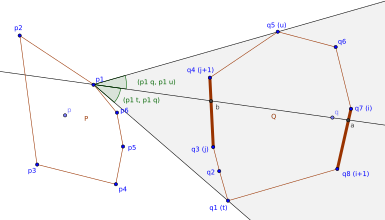
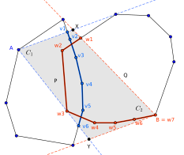
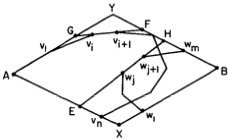
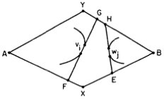
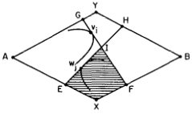
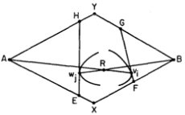
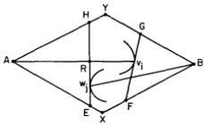

Par un processus similaire, il est aussi possible de déterminer une intersection entre deux polygones convexes $P$ et $Q$, en temps $O(\log (n + m))$. (Avec $n$ ne nombre de points de $P$, et $m$ celui de $Q$.) L'algorithme suivant teste s'il y a une intersection de l'intérieur des polygones, par seulement des segments qui constituent le bord. Ceci est avantageux pour la détection de collisions, et en fait on peut montrer qu'un algorithme qui teste seulement une intersection des bords peut seulement avoir une complexité linéaire.
Le principe de l'algorithme est de trouver d'abord deux ligne polygonales par les deux polygones, qui s'intersectent si et seulement si les polygones d'intersectent. (Le cas où un polygone serait complètement inclut dans l'autre est traité préliminairement.) Pour tester cette intersection en temps logarithmique, une procédure récursive est utilisé qui élimine à chaque étape une moitié d'une des lignes polynomiales.
Soit $q$ un point quelconque à l'intérieur de $Q$. Soit $a, b$ les points d'intersection de la droite $(p_1, q)$ et $Q$. (Calculés en utilisant l'algorithme IGL.) Si $p_1$ se trouve sur le segment $(a, b)$, alors les polygones s'intersectent, et $p_1$ est un point d'intersection. Sinon, soit $(q_i, q_{i+1})$ et $(q_j, q_{j+1})$ les segments de $Q$ sur lesquels $a$ et $b$ se trouvent, respectivement. Par recherche dichotomique, on trouve $t \in j...i+1$ tel que $\angle(p_{1}t, p{1}q)$ est maximal, et $u \in j+1...i$ tel que $\angle(p_{1}q, p{1}u)$ est maximal. Soit $C_1 = (p_{1}u, p_{1}t))$. Tous les points de $Q$ se trouvent dans la section du plan formée par ces deux demi-droites.
On applique la même procédure pour le polygone $P$ et le point $q_1$, pour trouver les deux demi-droites $C_2$ qui couvrent $P$.
Soit $A = p_1$, $B = q_2$, $X, Y$ les point d'intersection de $C_1$ et $C_2$. Si $P$ et $Q$ s'intersectent, cette intersection se trouve nécessairement à l'intérieur du quadrilataire $AYBX$: $C_1$ couvre $Q$, $C_2$ couvre $P$, et $AYBX$ est l'intersection des sections du plan couverts par $C_1$ et $C_2$.
Il est possible que $C_1$ et $C_2$ contiennent des demi-droite parallèles et donc soit $X$ ou $Y$ n'existe pas. Dans ce cas on doit former un pentagone, en ajoutant un segment. Ce cas n'est pas traité ici.
Ensuite on trouve la ligne polynomiales $L_v = {v_1, v_2, ..., v_n}$ qui compose la partie du bord de $P$ qui est comprise en $C_1$. Donc $v_1$ est le point d'intersection de $AX$ et $P$, $v_n$ le point d'intersection de $AY$ et $P$, et les autre points $v_i$ sont des points $p_i$ de $P$. $L_v$ est pris en sens horlogique. De manière équivalente, on trouve $L_w$, en sens anti-horlogique, qui donne la partie du bord de $Q$ qui est comprise en $C_2$. (On redéfini $n = |L_v|$ et $m = |L_w|$)
Cet applet implémente la phase initiale de l'algorithme (trouver les polylignes $L_v$ et $L_w$):
Les polygones $P$ et $Q$ s'intersectent si et seulement si les deux polylignes $L_v$ et $L_w$ s'intersectent. Si $n, m > 5$, alors au lieu de tester toutes les $n \times m$ possibilitées de segments de $L_v$ et $L_w$ qui peuvent former l'intersection, l'algorithme récursif $\textbf{INTERSECT}(L_v, L_w)$ peut être utilisé:
On pose $i = \lfloor \frac{n}{2} \rfloor$ et $j = \lfloor \frac{m}{2} \rfloor$. Soit $F, G$ les points d'intersection de $v_{i}v_{i+1}$ et $AYBX$. On choisit $F$ tel que $v_{i+1}$ se trouve sur le segment $v_{i}F$. De la même manière, soit $E, H$ les points d'intersection de $w_{i}w_{i+1}$ et $AYBX$, où $w_{j+1}$ est sur le segment $w_{j}H$. (voir figure) Ensuite on distingue plusieurs cas:
Soit $x$ la ligne polygonale $AXB$, et $y$ la ligne polygonale $AYB$. Pour deux points $F$ et $G$, la notation $F < G$ sigifie que $F$ et $G$ sont tous les deux sur $x$ ou tous les deux sur $y$, et $F$ précède $G$ sur le chemin de $A$ à $B$.
Cas 1: $G$ et $F$ se trouvent au même côté de $AB$ et/ou $E$ et $H$ se trouvent au même côté de $AB$.
Si $G$ et $F$ sont sur $x$: $L_v \leftarrow \{ v_1, ..., v_{i+1}, v_{n} \}$. Sinon, si $G$ et $F$ sont sur $y$: $L_v \leftarrow \{ v_1, v_{i}, ..., v_{n} \}$.
De même, si $E$ et $H$ sont sur $x$, $L_w \leftarrow \{ w_1, w_j, ..., w_m \}$, et si $E$ et $H$ sont sur $y$, $L_w \leftarrow \{ w_1, ..., w_{j+1}, w_{n} \}$.
Explication pour le cas où $G$ et $F$ sont sur $y$ (représenté sur la figure): On peut montrer que si $L_v$ et $L_w$ s'intersectent, alors cette intersection doit être sur $\{ v_i, v_{i+1}, ..., v_{n} \}$:
Comme $G, F \in y$, $P$ se trouve complètement au même côté de $GF$ que $X$. Par conséquent, le point d'intersection de $P$ et $BY$ (unique par construction), doit se trouver sur le segment $BF$, et chaque point d'intersection des polylignes est dans $\{ v_i, ..., v_n \}$.
Cas 2: $F$ et $E$ sont sur $x$, et $G$ et $H$ sont sur $y$.
Si $F < E$ et $G < H$, il n'y a pas d'intersection des polygones, et l'algorithme se termine.
Soit $V$ l'intersection du polygone délimité par $(A, x, FG, y)$ ($AFGY$ sur la figure), et du polygone délimité par $(B, x, EH, y)$ ($BHE$ sur la figure).$ L'intersection des polylignes doit de trouver à l'intérieur de $V$. Pour ce cas ($F < E$ et $G < H$), $V$ est vide, et donc il n'y a pas d'intersection des polylignes.
Cas 3: Les segments $GF$ et $EH$ s'intersectent en un point $I$.
Si $G < H$ et $E < F$: Si $v_i \in GI$, $L_v \leftarrow \{ v_1, v_i, ..., v_n \}$, et si $w_{j+1} \in HI$, $L_w \leftarrow \{ w_1, ..., w_{j+1}, w_m \}$.
Si $H < G$ et $F < E$: Si $v_{i+1} \in FI$, $L_v \leftarrow \{ v_1, ..., v_{i+1}, v_n \}$, et si $w_j \in EI$, $L_w \leftarrow \{ w_1, w_j, ..., w_m \}$.
Cas 4: Les segments $Av_i$ et $Vw_j$ s'intersectent.
Dans ce cas, les polylignes d'intersectent dans le même point. En fait $Av_i$ et $Vw_j$ se trouvent dans $P$ et $Q$, respectivement, et donc leur intersection est aussi une intersection des deux polygones. (N.B. on cherche une intersection des d'intérieurs des polygones)
Cas 5: Soit $R$ le point d'intersection de $Av_i$ et $HE$.
Si $w_j \in ER$: $L_v \leftarrow \{ v_1, v_i, ..., v_n \}$ et $L_w \leftarrow \{ w_1, w_j, ..., w_m \}$.
Sinon, $L_w \leftarrow \{ v_1, ..., v_{i+1}, v_n \}$ et $L_w \leftarrow \{ w_1, ..., w_{j+1}, w_m \}$.
Tant que $|L_v|, |L_w| > 5$, on appelle récursivement $\textbf{INTERSECT}(L_v, L_w)$, avec les nouvelles $L_v$, $L_w$. Comme $L_v$ et/ou $L_w$ ont été réduits à la moitié, le nombre de récursions est limité par $\log_{2} (n + m)$.
Pour le cas où une des deux polylignes contient moins que 6 points, on peut prouver qu'il est aussi possible de détecter les intersections en temps logarithmique, avec un algorithme différent.